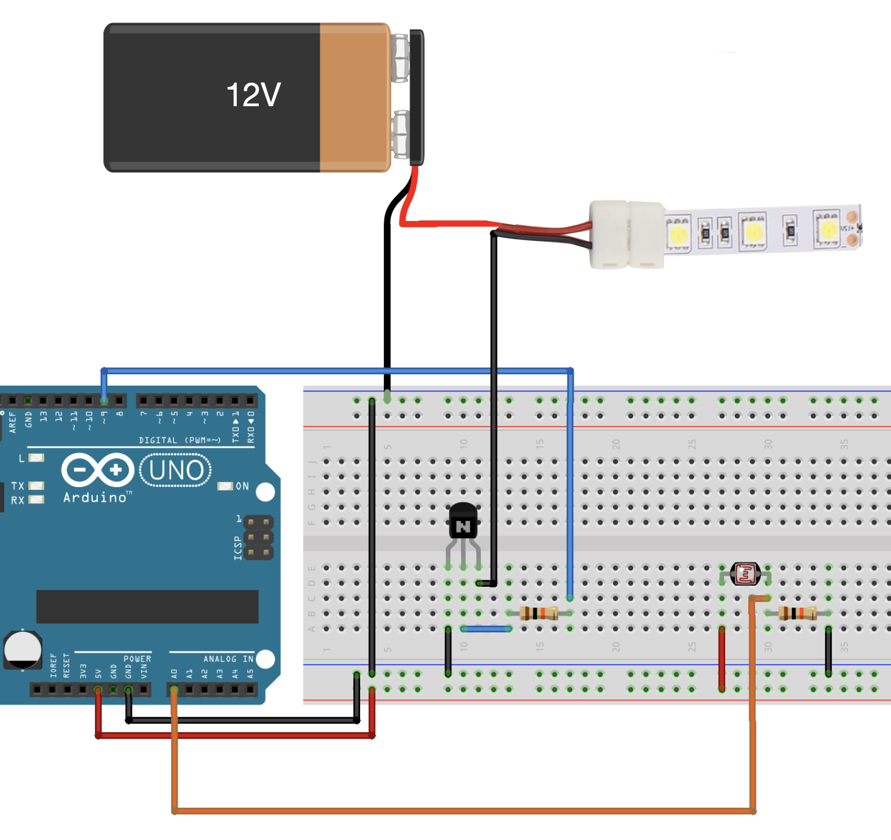
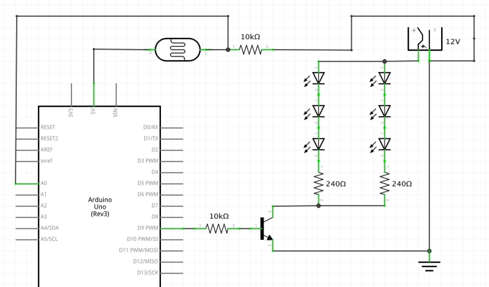
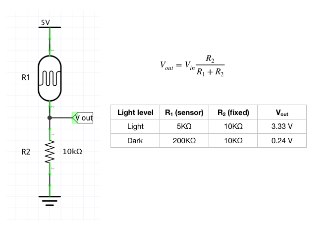

Timothy's Assignment 4!

Hardware
- Arduino Uno
- LED strip
- 2 10k ohm resistor
- Photo resistor
- Hook-up wires
- Breadboard
- NPN transistor
- Power supply
- Alligator clips (handy but not required)
Circuit
Schematic
To determine the resistance value of the pull down resistor in the voltage divider, we have with Ohm's Law: 5V = 200mA(R). Therefore R = 250Ω. I decided to use 10kΩ.
Voltage divider
Code
// Set constants for sensor pin and pin 9.
const int sensorPin = 0;
const int led = 9;
// Sets variables for level of light: high is 0 (0 Volts) and low is 1023 (5 Volts)
int light, high = 0, low = 1023;
void setup() {
// Initialize led as output
pinMode(led, OUTPUT);
}
void loop() {
// use analogRead to measure photoresistor pair voltage
light = analogRead(sensorPin);
// if light value is less than low value (1023)
if (light < low) {
low = light; // save new low value as light value
}
// if light value is greater than low value (0)
if (light > high) {
high = light; // save new high value as light value
}
// analogRead function returns values between 0 and 1023 but analogWrite wants values between 0 and 255.
// So we use the map function to "convert" from the higher range to the smaller range
light = map(light, low+40, high-40, 0, 255);
// limits light to between 0 and 255
light = constrain(light, 0, 255);
// Now we'll return to the main loop(), and send light
// to the led.
delay(50);
// brightens led when dark
analogWrite(led, 255-light);
}